Class octonionClass octonion
Class octonionClass octonionoctonion
octonion specializations
octonion member functions
octonion member operators
octonion non-member operations
octonion value operations
octonion transcendentals
四元数同様、八元数も複素数と 関係深いものである。
理論物理学では、八元数をよく利用するようである。
実質的には、八元数は単純に八つの実数
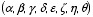
から成るものであり、
 のように書く。ここで、
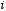,
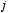,
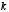は
四元数の説明で用いたものと同様のものであり、
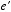,
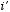,
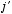,
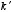は
本質的には
,
,
と
同じ役割をするが全く異なるものである。
のように書く。ここで、
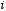,
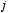,
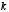は
四元数の説明で用いたものと同様のものであり、
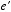,
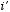,
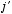,
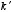は
本質的には
,
,
と
同じ役割をするが全く異なるものである。
八元数における加法、乗法を定義する。これらにより、四元数の加法、乗法を一般化 できる。ここでの中心となる新事項は、 "乗法には交換法則が成り立たないものがあり、今は結合法則も成り立たない" (i.e. ある四元数 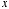, 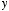, 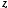 は 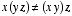となる)である。 以下に早見表を上げる:
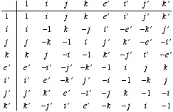
八元数やそれに類するものの詳細については、他のドキュメント( document, errata and addenda )に記述されている。
指数関数のような伝統的な構造のものは、あまり変更せずに八元数の領域に適用できる が、平方根を持つようなものはそうではない。指数関数が閉じた形の関数であるのは 最初に定義した人物によるものだが、八元数において指数関数が存在することは ずっと前に知られていることである。
数式の編集には Nisus Writer を使用した。Jens Maurer氏には推敲(has helped with portability and standard adherence)とプレビューの管理で協力して戴いた。 諸々の感謝については History の部分で述べる。このライブラリを議論し 協力してくださった方々に感謝する。
インターフェースと実装を提供するのがヘッダ octonion.h である。
テストプログラムoctonion_test.cppは、 float, double, long double型での八元数の特殊化のテストを 行なう。(出力の例)
BOOST_OCTONION_TEST_VERBOSEを定義していれば、 さらなる出力(出力の例)が得られる。 もちろん(関連する行をテストプログラムに記述しない、または コマンドラインで --log_level=messages と加えることによって)、 同時に出力出来る場合のみ役立つ。 その場合、すなわち対話的に実行している場合、 標準入力により入力演算子の対話的テストのために、 (テストプログラムに大変なコーディングを施す代わりに) 付加的にBOOST_INTERACTIVE_TEST_INPUT_ITERATORを定義できる。
namespace boost
{
namespace math
{
template<typename T> class octonion;
template<> class octonion<float>;
template<> class octonion<double>;
template<> class octonion<long double>;
// operators
template<typename T> inline octonion<T> operator + (T const & lhs, octonion<T> const & rhs);
template<typename T> inline octonion<T> operator + (octonion<T> const & lhs, T const & rhs);
template<typename T> inline octonion<T> operator + (::std::complex<T> const & lhs, octonion<T> const & rhs);
template<typename T> inline octonion<T> operator + (octonion<T> const & lhs, ::std::complex<T> const & rhs);
template<typename T> inline octonion<T> operator + (::boost::math::quaternion<T> const & lhs, octonion<T> const & rhs);
template<typename T> inline octonion<T> operator + (octonion<T> const & lhs, ::boost::math::quaternion<T> const & rhs);
template<typename T> inline octonion<T> operator + (octonion<T> const & lhs, octonion<T> const & rhs);
template<typename T> inline octonion<T> operator - (T const & lhs, octonion<T> const & rhs);
template<typename T> inline octonion<T> operator - (octonion<T> const & lhs, T const & rhs);
template<typename T> inline octonion<T> operator - (::std::complex<T> const & lhs, octonion<T> const & rhs);
template<typename T> inline octonion<T> operator - (octonion<T> const & lhs, ::std::complex<T> const & rhs);
template<typename T> inline octonion<T> operator - (::boost::math::quaternion<T> const & lhs, octonion<T> const & rhs);
template<typename T> inline octonion<T> operator - (octonion<T> const & lhs, ::boost::math::quaternion<T> const & rhs);
template<typename T> inline octonion<T> operator - (octonion<T> const & lhs, octonion<T> const & rhs);
template<typename T> inline octonion<T> operator * (T const & lhs, octonion<T> const & rhs);
template<typename T> inline octonion<T> operator * (octonion<T> const & lhs, T const & rhs);
template<typename T> inline octonion<T> operator * (::std::complex<T> const & lhs, octonion<T> const & rhs);
template<typename T> inline octonion<T> operator * (octonion<T> const & lhs, ::std::complex<T> const & rhs);
template<typename T> inline octonion<T> operator * (::boost::math::quaternion<T> const & lhs, octonion<T> const & rhs);
template<typename T> inline octonion<T> operator * (octonion<T> const & lhs, ::boost::math::quaternion<T> const & rhs);
template<typename T> inline octonion<T> operator * (octonion<T> const & lhs, octonion<T> const & rhs);
template<typename T> inline octonion<T> operator / (T const & lhs, octonion<T> const & rhs);
template<typename T> inline octonion<T> operator / (octonion<T> const & lhs, T const & rhs);
template<typename T> inline octonion<T> operator / (::std::complex<T> const & lhs, octonion<T> const & rhs);
template<typename T> inline octonion<T> operator / (octonion<T> const & lhs, ::std::complex<T> const & rhs);
template<typename T> inline octonion<T> operator / (::boost::math::quaternion<T> const & lhs, octonion<T> const & rhs);
template<typename T> inline octonion<T> operator / (octonion<T> const & lhs, ::boost::math::quaternion<T> const & rhs);
template<typename T> inline octonion<T> operator / (octonion<T> const & lhs, octonion<T> const & rhs);
template<typename T> inline octonion<T> operator + (octonion<T> const & o);
template<typename T> inline octonion<T> operator - (octonion<T> const & o);
template<typename T> inline bool operator == (T const & lhs, octonion<T> const & rhs);
template<typename T> inline bool operator == (octonion<T> const & lhs, T const & rhs);
template<typename T> inline bool operator == (::std::complex<T> const & lhs, octonion<T> const & rhs);
template<typename T> inline bool operator == (octonion<T> const & lhs, ::std::complex<T> const & rhs);
template<typename T> inline bool operator == (::boost::math::quaternion<T> const & lhs, octonion<T> const & rhs);
template<typename T> inline bool operator == (octonion<T> const & lhs, ::boost::math::quaternion<T> const & rhs);
template<typename T> inline bool operator == (octonion<T> const & lhs, octonion<T> const & rhs);
template<typename T> inline bool operator != (T const & lhs, octonion<T> const & rhs);
template<typename T> inline bool operator != (octonion<T> const & lhs, T const & rhs);
template<typename T> inline bool operator != (::std::complex<T> const & lhs, octonion<T> const & rhs);
template<typename T> inline bool operator != (octonion<T> const & lhs, ::std::complex<T> const & rhs);
template<typename T> inline bool operator != (::boost::math::quaternion<T> const & lhs, octonion<T> const & rhs);
template<typename T> inline bool operator != (octonion<T> const & lhs, ::boost::math::quaternion<T> const & rhs);
template<typename T> inline bool operator != (octonion<T> const & lhs, octonion<T> const & rhs);
template<typename T, typename charT, class traits>
::std::basic_istream<charT,traits> & operator >> (::std::basic_istream<charT,traits> & is, octonion<T> & o);
template<typename T, typename charT, class traits>
::std::basic_ostream<charT,traits> & operator << (::std::basic_ostream<charT,traits> & os, octonion<T> const & o);
// values
template<typename T> inline T real(octonion<T> const & o);
template<typename T> inline octonion<T> unreal(octonion<T> const & o);
template<typename T> inline T sup(octonion<T> const & o);
template<typename T> inline T l1(octonion<T>const & o);
template<typename T> inline T abs(octonion<T> const & o);
template<typename T> inline T norm(octonion<T>const & o);
template<typename T> inline octonion<T> conj(octonion<T> const & o);
template<typename T> inline octonion<T> spherical(T const & rho, T const & theta, T const & phi1, T const & phi2, T const & phi3, T const & phi4, T const & phi5, T const & phi6);
template<typename T> inline octonion<T> multipolar(T const & rho1, T const & theta1, T const & rho2, T const & theta2, T const & rho3, T const & theta3, T const & rho4, T const & theta4);
template<typename T> inline octonion<T> cylindrical(T const & r, T const & angle, T const & h1, T const & h2, T const & h3, T const & h4, T const & h5, T const & h6);
// transcendentals
template<typename T> inline octonion<T> exp(octonion<T> const & o);
template<typename T> inline octonion<T> cos(octonion<T> const & o);
template<typename T> inline octonion<T> sin(octonion<T> const & o);
template<typename T> inline octonion<T> tan(octonion<T> const & o);
template<typename T> inline octonion<T> cosh(octonion<T> const & o);
template<typename T> inline octonion<T> sinh(octonion<T> const & o);
template<typename T> inline octonion<T> tanh(octonion<T> const & o);
template<typename T> octonion<T> pow(octonion<T> const & o, int n);
}
}octonionnamespace boost
{
namespace math
{
template<typename T>
class octonion
{
public:
typedef T value_type;
explicit octonion(T const & requested_a = T(), T const & requested_b = T(), T const & requested_c = T(), T const & requested_d = T(), T const & requested_e = T(), T const & requested_f = T(), T const & requested_g = T(), T const & requested_h = T());
explicit octonion(::std::complex<T> const & z0, ::std::complex<T> const & z1 = ::std::complex<T>(), ::std::complex<T> const & z2 = ::std::complex<T>(), ::std::complex<T> const & z3 = ::std::complex<T>());
explicit octonion(::boost::math::quaternion<T> const & q0, ::boost::math::quaternion<T> const & q1 = ::boost::math::quaternion<T>());
template<typename X> explicit octonion(octonion<X> const & a_recopier);
T real() const;
octonion<T> unreal() const;
T R_component_1() const;
T R_component_2() const;
T R_component_3() const;
T R_component_4() const;
T R_component_5() const;
T R_component_6() const;
T R_component_7() const;
T R_component_8() const;
::std::complex<T> C_component_1() const;
::std::complex<T> C_component_2() const;
::std::complex<T> C_component_3() const;
::std::complex<T> C_component_4() const;
::boost::math::quaternion<T> H_component_1() const;
::boost::math::quaternion<T> H_component_2() const;
octonion<T> & operator = (octonion<T> const & a_affecter);
template<typename X> octonion<T> & operator = (octonion<X> const & a_affecter);
octonion<T> & operator = (T const & a_affecter);
octonion<T> & operator = (::std::complex<T> const & a_affecter);
octonion<T> & operator = (::boost::math::quaternion<T> const & a_affecter);
octonion<T> & operator += (T const & rhs);
octonion<T> & operator += (::std::complex<T> const & rhs);
octonion<T> & operator += (::boost::math::quaternion<T> const & rhs);
template<typename X> octonion<T> & operator += (octonion<X> const & rhs);
octonion<T> & operator -= (T const & rhs);
octonion<T> & operator -= (::std::complex<T> const & rhs);
octonion<T> & operator -= (::boost::math::quaternion<T> const & rhs);
template<typename X> octonion<T> & operator -= (octonion<X> const & rhs);
octonion<T> & operator *= (T const & rhs);
octonion<T> & operator *= (::std::complex<T> const & rhs);
octonion<T> & operator *= (::boost::math::quaternion<T> const & rhs);
template<typename X> octonion<T> & operator *= (octonion<X> const & rhs);
octonion<T> & operator /= (T const & rhs);
octonion<T> & operator /= (::std::complex<T> const & rhs);
octonion<T> & operator /= (::boost::math::quaternion<T> const & rhs);
template<typename X> octonion<T> & operator /= (octonion<X> const & rhs);
};
}
}octonion specializationsnamespace boost
{
namespace math
{
template<>
class octonion<float>
{
public:
typedef float value_type;
explicit octonion(float const & requested_a = 0.0f, float const & requested_b = 0.0f, float const & requested_c = 0.0f, float const & requested_d = 0.0f, float const & requested_e = 0.0f, float const & requested_f = 0.0f, float const & requested_g = 0.0f, float const & requested_h = 0.0f);
explicit octonion(::std::complex<float> const & z0, ::std::complex<float> const & z1 = ::std::complex<float>(), ::std::complex<float> const & z2 = ::std::complex<float>(), ::std::complex<float> const & z3 = ::std::complex<float>());
explicit octonion(::boost::math::quaternion<float> const & q0, ::boost::math::quaternion<float> const & q1 = ::boost::math::quaternion<float>());
explicit octonion(octonion<double> const & a_recopier);
explicit octonion(octonion<long double> const & a_recopier);
float real() const;
octonion<float> unreal() const;
float R_component_1() const;
float R_component_2() const;
float R_component_3() const;
float R_component_4() const;
float R_component_5() const;
float R_component_6() const;
float R_component_7() const;
float R_component_8() const;
::std::complex<float> C_component_1() const;
::std::complex<float> C_component_2() const;
::std::complex<float> C_component_3() const;
::std::complex<float> C_component_4() const;
::boost::math::octonion<float> H_component_1() const;
::boost::math::octonion<float> H_component_2() const;
octonion<float> & operator = (octonion<float> const & a_affecter);
template<typename X> octonion<float> & operator = (octonion<X>const & a_affecter);
octonion<float> & operator = (float const & a_affecter);
octonion<float> & operator = (::std::complex<float> const & a_affecter);
octonion<float> & operator = (::boost::math::quaternion<float> const & a_affecter);
octonion<float> & operator += (float const & rhs);
octonion<float> & operator += (::std::complex<float> const & rhs);
template<typename X> octonion<float> & operator += (octonion<X> const & rhs);
octonion<float> & operator -= (float const & rhs);
octonion<float> & operator -= (::std::complex<float> const & rhs);
octonion<float> & operator -= (::boost::math::quaternion<float> const & rhs);
template<typename X> octonion<float> & operator -= (octonion<X> const & rhs);
octonion<float> & operator *= (float const & rhs);
octonion<float> & operator *= (::std::complex<float> const & rhs);
octonion<float> & operator *= (::boost::math::quaternion<float> const & rhs);
template<typename X> octonion<float> & operator *= (octonion<X> const & rhs);
octonion<float> & operator /= (float const & rhs);
octonion<float> & operator /= (::std::complex<float> const & rhs);
octonion<float> & operator /= (::boost::math::quaternion<float> const & rhs);
template<typename X> octonion<float> & operator /= (octonion<X> const & rhs);
};
template<>
class octonion<double>
{
public:
typedef double value_type;
explicit octonion(double const & requested_a = 0.0, double const & requested_b = 0.0, double const & requested_c = 0.0, double const & requested_d = 0.0, double const & requested_e = 0.0, double const & requested_f = 0.0, double const & requested_g = 0.0, double const & requested_h = 0.0);
explicit octonion(::std::complex<double> const & z0, ::std::complex<double> const & z1 = ::std::complex<double>(), ::std::complex<double> const & z2 = ::std::complex<double>(), ::std::complex<double> const & z3 = ::std::complex<double>());
explicit octonion(::boost::math::quaternion<double> const & q0, ::boost::math::quaternion<double> const & q1 = ::boost::math::quaternion<double>());
explicit octonion(octonion<float> const & a_recopier);
explicit octonion(octonion<long double> const & a_recopier);
double real() const;
octonion<double> unreal() const;
double R_component_1() const;
double R_component_2() const;
double R_component_3() const;
double R_component_4() const;
double R_component_5() const;
double R_component_6() const;
double R_component_7() const;
double R_component_8() const;
::std::complex<double> C_component_1() const;
::std::complex<double> C_component_2() const;
::std::complex<double> C_component_3() const;
::std::complex<double> C_component_4() const;
::boost::math::quaternion<double> H_component_1() const;
::boost::math::quaternion<double> H_component_2() const;
octonion<double> & operator = (octonion<double> const & a_affecter);
template<typename X> octonion<double> & operator = (octonion<X> const & a_affecter);
octonion<double> & operator = (double const & a_affecter);
octonion<double> & operator = (::std::complex<double> const & a_affecter);
octonion<double> & operator = (::boost::math::quaternion<double> const & a_affecter);
octonion<double> & operator += (double const & rhs);
octonion<double> & operator += (::std::complex<double> const & rhs);
octonion<double> & operator += (::boost::math::quaternion<double> const & rhs);
template<typename X> octonion<double> & operator += (octonion<X> const & rhs);
octonion<double> & operator -= (double const & rhs);
octonion<double> & operator -= (::std::complex<double> const & rhs);
octonion<double> & operator -= (::boost::math::quaternion<double> const & rhs);
template<typename X> octonion<double> & operator -= (octonion<X> const & rhs);
octonion<double> & operator *= (double const & rhs);
octonion<double> & operator *= (::std::complex<double> const & rhs);
octonion<double> & operator *= (::boost::math::quaternion<double> const & rhs);
template<typename X> octonion<double> & operator *= (octonion<X> const & rhs);
octonion<double> & operator /= (double const & rhs);
octonion<double> & operator /= (::std::complex<double> const & rhs);
octonion<double> & operator /= (::boost::math::quaternion<double> const & rhs);
template<typename X> octonion<double> & operator /= (octonion<X> const & rhs);
};
template<>
class octonion<long double>
{
public:
typedef long double value_type;
explicit octonion(long double const & requested_a = 0.0L, long double const & requested_b = 0.0L, long double const & requested_c = 0.0L, long double const & requested_d = 0.0L, long double const & requested_e = 0.0L, long double const & requested_f = 0.0L, long double const & requested_g = 0.0L, long double const & requested_h = 0.0L);
explicit octonion( ::std::complex<long double> const & z0, ::std::complex<long double> const & z1 = ::std::complex<long double>(), ::std::complex<long double> const & z2 = ::std::complex<long double>(), ::std::complex<long double> const & z3 = ::std::complex<long double>());
explicit octonion( ::boost::math::quaternion<long double> const & q0, ::boost::math::quaternion<long double> const & z1 = ::boost::math::quaternion<long double>());
explicit octonion(octonion<float> const & a_recopier);
explicit octonion(octonion<double> const & a_recopier);
long double real() const;
octonion<long double> unreal() const;
long double R_component_1() const;
long double R_component_2() const;
long double R_component_3() const;
long double R_component_4() const;
long double R_component_5() const;
long double R_component_6() const;
long double R_component_7() const;
long double R_component_8() const;
::std::complex<long double> C_component_1() const;
::std::complex<long double> C_component_2() const;
::std::complex<long double> C_component_3() const;
::std::complex<long double> C_component_4() const;
::boost::math::quaternion<long double> H_component_1() const;
::boost::math::quaternion<long double> H_component_2() const;
octonion<long double> & operator = (octonion<long double> const & a_affecter);
template<typename X> octonion<long double> & operator = (octonion<X> const & a_affecter);
octonion<long double> & operator = (long double const & a_affecter);
octonion<long double> & operator = (::std::complex<long double> const & a_affecter);
octonion<long double> & operator = (::boost::math::quaternion<long double> const & a_affecter);
octonion<long double> & operator += (long double const & rhs);
octonion<long double> & operator += (::std::complex<long double> const & rhs);
octonion<long double> & operator += (::boost::math::quaternion<long double> const & rhs);
template<typename X> octonion<long double> & operator += (octonion<X> const & rhs);
octonion<long double> & operator -= (long double const & rhs);
octonion<long double> & operator -= (::std::complex<long double> const & rhs);
octonion<long double> & operator -= (::boost::math::quaternion<long double> const & rhs);
template<typename X> octonion<long double> & operator -= (octonion<X> const & rhs);
octonion<long double> & operator *= (long double const & rhs);
octonion<long double> & operator *= (::std::complex<long double> const & rhs);
octonion<long double> & operator *= (::boost::math::quaternion<long double> const & rhs);
template<typename X> octonion<long double> & operator *= (octonion<X> const & rhs);
octonion<long double> & operator /= (long double const & rhs);
octonion<long double> & operator /= (::std::complex<long double> const & rhs);
octonion<long double> & operator /= (::boost::math::quaternion<long double> const & rhs);
template<typename X> octonion<long double> & operator /= (octonion<X> const & rhs);
};
}
}octonion typedefsvalue_typetypedef T value_type;テンプレート版
typedef float value_type;float型の特殊化版
typedef double value_type;double型の特殊化版
typedef long double value_type;long double型の特殊化版
これらにより、テンプレートが作られる型へのアクセスが容易になる。
octonion member functionsexplicit octonion(T const & requested_a = T(), T const & requested_b = T(), T const & requested_c = T(), T const & requested_d = T(), T const & requested_e = T(), T const & requested_f = T(), T const & requested_g = T(), T const & requested_h = T());
explicit octonion(::std::complex<T> const & z0, ::std::complex<T> const & z1 = ::std::complex<T>(), ::std::complex<T> const & z2 = ::std::complex<T>(), ::std::complex<T> const & z3 = ::std::complex<T>());
explicit octonion(::boost::math::quaternion<T> const & q0, ::boost::math::quaternion<T> const & q1 = ::boost::math::quaternion<T>());
template<typename X> explicit octonion(octonion<X> const & a_recopier);テンプレート版
explicit octonion(float const & requested_a = 0.0f, float const & requested_b = 0.0f, float const & requested_c = 0.0f, float const & requested_d = 0.0f, float const & requested_e = 0.0f, float const & requested_f = 0.0f, float const & requested_g = 0.0f, float const & requested_h = 0.0f);
explicit octonion(::std::complex<float> const & z0, ::std::complex<float> const & z1 = ::std::complex<float>(), ::std::complex<float> const & z2 = ::std::complex<float>(), ::std::complex<float> const & z3 = ::std::complex<float>());
explicit octonion(::boost::math::quaternion<float> const & q0, ::boost::math::quaternion<float> const & q1 = ::boost::math::quaternion<float>());
explicit octonion(octonion<double> const & a_recopier);
explicit octonion(octonion<long double> const & a_recopier);float型の特殊化版
explicit octonion(double const & requested_a = 0.0, double const & requested_b = 0.0, double const & requested_c = 0.0, double const & requested_d = 0.0, double const & requested_e = 0.0, double const & requested_f = 0.0, double const & requested_g = 0.0, double const & requested_h = 0.0);
explicit octonion(::std::complex<double> const & z0, ::std::complex<double> const & z1 = ::std::complex<double>(), ::std::complex<double> const & z2 = ::std::complex<double>(), ::std::complex<double> const & z3 = ::std::complex<double>());
explicit octonion(::boost::math::quaternion<double> const & q0, ::boost::math::quaternion<double> const & q1 = ::boost::math::quaternion<double>());
explicit octonion(octonion<float> const & a_recopier);
explicit octonion(octonion<long double> const & a_recopier);double型の特殊化版
explicit octonion(long double const & requested_a = 0.0L, long double const & requested_b = 0.0L, long double const & requested_c = 0.0L, long double const & requested_d = 0.0L, long double const & requested_e = 0.0L, long double const & requested_f = 0.0L, long double const & requested_g = 0.0L, long double const & requested_h = 0.0L);
explicit octonion( ::std::complex<long double> const & z0, ::std::complex<long double> const & z1 = ::std::complex<long double>(), ::std::complex<long double> const & z2 = ::std::complex<long double>(), ::std::complex<long double> const & z3 = ::std::complex<long double>());
explicit octonion(::boost::math::quaternion<long double> const & q0, ::boost::math::quaternion<long double> const & q1 = ::boost::math::quaternion<long double>());
explicit octonion(octonion<float> const & a_recopier);
explicit octonion(octonion<double> const & a_recopier);long doubleの特殊化版
デフォルトのコンストラクタはそれぞれの版で提供され、 それぞれのコンポーネント はその型でのデフォルト値で初期化される( i.e.浮動小数ではゼロ )。 また、このコンストラクタは1～8つまで 基底型の引数をとることができる。 さらに、コンストラクタが提供されるのは、同じ基底型を有する1～4つの複素数、または 同じ基底型を有する1～2つの四元数から八元数を作るためである。 ( A constructor is also provided to build octonions from one to four complex numbers sharing the same base type, and another taking one or two quaternions sharing the same base type. ) 特殊化版が他の2つの特殊化版からのコピーコンストラクタを持っている間は、 特殊化されていないテンプレートはテンプレート化されたコピーコンストラクタを 持ち、精度を損なう危険があるときでは明示的である。 ( The unspecialized template also sports a templarized copy constructor, while the specialized forms have copy constructors from the other two specializations, which are explicit when a risk of precision loss exists. ) 特殊化されていないもののために、基底型のコンストラクタが 発生してはならない。
(同じ型からの)コピーコンストラクタ、及びデストラクタはコンパイラによって提供 される。コピーコンストラクタを変換するために、テンプレート化された ヘルパ関数がサブ名前空間"detail" で使われる。
T real() const;
octonion<T> unreal() const;八元数は、複素数と同様に "実部" という重要な概念を持っているが、 複素数と異なり "虚部" という重要な概念は存在しない。その代わり、 "実部ではない部分" があり、それこそが八元数である。また、( 複素数の 場合とは対照的に )通例単純ではない。最初の2つの関数がこれらを返す。
T R_component_1() const;
T R_component_2() const;
T R_component_3() const;
T R_component_4() const;
T R_component_5() const;
T R_component_6() const;
T R_component_7() const;
T R_component_8() const;八元数は8つの実成分を持っており、これら8つの関数が値を返す。 それゆえに、
realとR_component_1は同じ値を返す。
::std::complex<T> C_component_1() const;
::std::complex<T> C_component_2() const;
::std::complex<T> C_component_3() const;
::std::complex<T> C_component_4() const;同様に、八元数は4つの複素数を成分として持つ。 実際、八元数は複素数四次元空間のベクトル場であるが ( octonions are indeed a (left) vector field over the complexes ) 、どのような八元数 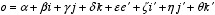 についても 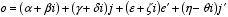(※最後の項の中は"-") と書けることに注意。しかしながら、
C_component_n関数が返すのは、 コンストラクタを用いた八元数を作るのに利用できるであろう複素数であり、 八元数の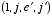成分ではない。
::boost::math::quaternion<T> H_component_1() const;
::boost::math::quaternion<T> H_component_2() const;同様にどのような八元数 についても 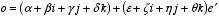 と書けるが、四元数を成分とした、ベクトル空間のような構造という意味は無い。
H_component_n関数が返すのは、コンストラクタを用いた八元数を 作るのに利用できるであろう四元数である。
octonion member operatorsoctonion<T> & operator = (octonion<T> const & a_affecter);
template<typename X> octonion<T> & operator = (octonion<X> const & a_affecter);
octonion<T> & operator = (T const & a_affecter);
octonion<T> & operator = (::std::complex<T> const & a_affecter);
octonion<T> & operator = (::boost::math::quaternion<T> const & a_affecter);これらは代入を行ない、必要があれば変換する( 例えば、基底型からの 代入では、その値は実部へと変換される。すなわち、他の成分はゼロとなる )。 特殊化版でない場合、基底型の代入演算子は発生してはならない。
octonion<T> & operator += (T const & rhs)
octonion<T> & operator += (::std::complex<T> const & rhs);
octonion<T> & operator += (::boost::math::quaternion<T> const & rhs);
template<typename X> octonion<T> & operator += (octonion<X> const & rhs);これらは数学演算子 (*this)+rhs を求めて代入を行なう。 特殊化版でないものは例外 安全の強い保証を尊守している。 特殊化版では、例外の安全性を保証するために、代入まで行なう。 特殊化版でない場合、基底型の代入演算子は発生してはならない。
octonion<T> & operator -= (T const & rhs)
octonion<T> & operator -= (::std::complex<T> const & rhs);
octonion<T> & operator -= (::boost::math::quaternion<T> const & rhs);
template<typename X> octonion<T> & operator -= (octonion<X> const & rhs);これらは数学演算子 (*this)-rhs を求めて代入を行なう。 特殊化版でないものは例外 安全の強い保証を尊守している。 特殊化版では、例外の安全性を保証するために、代入まで行なう。 特殊化版でない場合、基底型の代入演算子は発生してはならない。
octonion<T> & operator *= (T const & rhs)
octonion<T> & operator *= (::std::complex<T> const & rhs);
octonion<T> & operator *= (::boost::math::quaternion<T> const & rhs);
template<typename X> octonion<T> & operator *= (octonion<X> const & rhs);これらは数学演算子 (*this)*rhs を、 前述した通りの順序で、求めて代入を行なう( 八元数では 乗法の可換でないため、乗法の順序は重要である )。 特殊化版でないものは例外 安全の強い保証を尊守している。 特殊化版では、例外の安全性を保証するために、代入まで行なう。 特殊化版でない場合、基底型の代入演算子は発生してはならない。 また、八元数では乗法の結合法則が成り立たないことから、 論理を明確にするために二つの集合の乗法では いつでも 要素をまとめるべきである( もちろんこの事が重要でないときもあるが、 大抵は重要である )。
octonion<T> & operator /= (T const & rhs)
octonion<T> & operator /= (::std::complex<T> const & rhs);
octonion<T> & operator /= (::boost::math::quaternion<T> const & rhs);
template<typename X> octonion<T> & operator /= (octonion<X> const & rhs);これらは数学演算子 (*this)*inverse_of(rhs) との積を、前述した通りの順序で、 求めて代入を行なう( 八元数では 乗法の可換でないため、乗法の順序は重要である )。 特殊化版でないものは例外 安全の強い保証を尊守している。 特殊化版では、例外の安全性を保証するために、代入まで行なう。 特殊化版でない場合、基底型の代入演算子は発生してはならない。 この乗法では、括弧で括った二つの要素をまとめることを忘れずに 行ないなさい。
octonion non-member operationstemplate<typename T> inline octonion<T> operator + (octonion<T> const & o);この単項演算子はただ
oを返す。
template<typename T> inline octonion<T> operator - (octonion<T> const & o);この単項演算子は
oの逆符号のものを返す。
template<typename T> inline octonion<T> operator + (T const & lhs, octonion<T> const & rhs);
template<typename T> inline octonion<T> operator + (octonion<T> const & lhs, T const & rhs);
template<typename T> inline octonion<T> operator + (::std::complex<T> const & lhs, octonion<T> const & rhs);
template<typename T> inline octonion<T> operator + (octonion<T> const & lhs, ::std::complex<T> const & rhs);
template<typename T> inline octonion<T> operator + (::boost::math::quaternion<T> const & lhs, octonion<T> const & rhs);
template<typename T> inline octonion<T> operator + (octonion<T> const & lhs, ::boost::math::quaternion<T> const & rhs);
template<typename T> inline octonion<T> operator + (octonion<T> const & lhs, octonion<T> const & rhs);これらの演算子は
octonion<T>(lhs) += rhsを返す。
template<typename T> inline octonion<T> operator - (T const & lhs, octonion<T> const & rhs);
template<typename T> inline octonion<T> operator - (octonion<T> const & lhs, T const & rhs);
template<typename T> inline octonion<T> operator - (::std::complex<T> const & lhs, octonion<T> const & rhs);
template<typename T> inline octonion<T> operator - (octonion<T> const & lhs, ::std::complex<T> const & rhs);
template<typename T> inline octonion<T> operator - (::boost::math::quaternion<T> const & lhs, octonion<T> const & rhs);
template<typename T> inline octonion<T> operator - (octonion<T> const & lhs, ::boost::math::quaternion<T> const & rhs);
template<typename T> inline octonion<T> operator - (octonion<T> const & lhs, octonion<T> const & rhs);これらの演算子は
octonion<T>(lhs) -= rhsを返す。
template<typename T> inline octonion<T> operator * (T const & lhs, octonion<T> const & rhs);
template<typename T> inline octonion<T> operator * (octonion<T> const & lhs, T const & rhs);
template<typename T> inline octonion<T> operator * (::std::complex<T> const & lhs, octonion<T> const & rhs);
template<typename T> inline octonion<T> operator * (octonion<T> const & lhs, ::std::complex<T> const & rhs);
template<typename T> inline octonion<T> operator * (::boost::math::quaternion<T> const & lhs, octonion<T> const & rhs);
template<typename T> inline octonion<T> operator * (octonion<T> const & lhs, ::boost::math::quaternion<T> const & rhs);
template<typename T> inline octonion<T> operator * (octonion<T> const & lhs, octonion<T> const & rhs);これら演算子子は
octonion<T>(lhs) *= rhsを返す。
template<typename T> inline octonion<T> operator / (T const & lhs, octonion<T> const & rhs);
template<typename T> inline octonion<T> operator / (octonion<T> const & lhs, T const & rhs);
template<typename T> inline octonion<T> operator / (::std::complex<T> const & lhs, octonion<T> const & rhs);
template<typename T> inline octonion<T> operator / (octonion<T> const & lhs, ::std::complex<T> const & rhs);
template<typename T> inline octonion<T> operator / (::boost::math::quaternion<T> const & lhs, octonion<T> const & rhs);
template<typename T> inline octonion<T> operator / (octonion<T> const & lhs, ::boost::math::quaternion<T> const & rhs);
template<typename T> inline octonion<T> operator / (octonion<T> const & lhs, octonion<T> const & rhs);これらの演算子は
octonion<T>(lhs) /= rhsを返す。 ゼロでの除法は、もちろんエラーになる...。
template<typename T> inline bool operator == (T const & lhs, octonion<T> const & rhs);
template<typename T> inline bool operator == (octonion<T> const & lhs, T const & rhs);
template<typename T> inline bool operator == (::std::complex<T> const & lhs, octonion<T> const & rhs);
template<typename T> inline bool operator == (octonion<T> const & lhs, ::std::complex<T> const & rhs);
template<typename T> inline bool operator == (::boost::math::quaternion<T> const & lhs, octonion<T> const & rhs);
template<typename T> inline bool operator == (octonion<T> const & lhs, ::boost::math::quaternion<T> const & rhs);
template<typename T> inline bool operator == (octonion<T> const & lhs, octonion<T> const & rhs);これらは、
octonion<T>(lhs)の四つの成分とこれらの 対応成分とが等しければtrueを返す。 どんな浮動小数点型のものであっても、本質的には意味が無い。
template<typename T> inline bool operator != (T const & lhs, octonion<T> const & rhs);
template<typename T> inline bool operator != (octonion<T> const & lhs, T const & rhs);
template<typename T> inline bool operator != (::std::complex<T> const & lhs, octonion<T> const & rhs);
template<typename T> inline bool operator != (octonion<T> const & lhs, ::std::complex<T> const & rhs);
template<typename T> inline bool operator != (::boost::math::quaternion<T> const & lhs, octonion<T> const & rhs);
template<typename T> inline bool operator != (octonion<T> const & lhs, ::boost::math::quaternion<T> const & rhs);
template<typename T> inline bool operator != (octonion<T> const & lhs, octonion<T> const & rhs);これらは、
octonion<T>(lhs) == octonion<T>(rhs)が 偽のときのみ、trueを返す。 どんな浮動小数点型のものであっても、本質的には意味が無い。
template<typename T, typename charT, class traits>
::std::basic_istream<charT,traits> & operator >> (::std::basic_istream<charT,traits> & is, octonion<T> & o);八元数
oを引き出す。妥当なようならばどのような書式でも 受けいれる。しかしながらこのことが多大なあいまいさに引き起こし、 これらを向上させるためにいくつかの解決がなされた。 疑念がある場合は実態を示す。入力値は T に変換できなければならない。 不正な入力に出くわしたときは、 is.setstate(ios::failbit) を呼ぶ( ios::failure (27.4.5.3) が発生するかもしれない )。
返り値は ( Returns
is. )。
template<typename T, typename charT, class traits>
::std::basic_ostream<charT,traits> & operator << (::std::basic_ostream<charT,traits> & os, octonion<T> const & o);以下に示す通り、あたかも実装されたかのように、 八元数
oをストリームosに挿入する:
template<typename T, typename charT, class traits>
::std::basic_ostream<charT,traits> & operator << ( ::std::basic_ostream<charT,traits> & os,
octonion<T> const & o)
{
::std::basic_ostringstream<charT,traits> s;
s.flags(os.flags());
s.imbue(os.getloc());
s.precision(os.precision());
s << '(' << o.R_component_1() << ','
<< o.R_component_2() << ','
<< o.R_component_3() << ','
<< o.R_component_4() << ','
<< o.R_component_5() << ','
<< o.R_component_6() << ','
<< o.R_component_7() << ','
<< o.R_component_8() << ')';
return os << s.str();
}octonion value operationstemplate<typename T> inline T real(octonion<T> const & o);
template<typename T> inline octonion<T> unreal(octonion<T> const & o);これらはそれぞれ、
o.real()とo.unreal()を返す。
template<typename T> inline octonion<T> conj(octonion<T> const & o);これは八元数の共役を返す。
template<typename T> inline T sup(octonion<T> const & o);これは八元数の最大ノルム(
abs(o.R_component_1())...abs(o.Rcomponent_8())間の 最大値)を返す。
template<typename T> inline T l1(octonion<T> const & o);これは八元数の1-ノルム(
abs(o.R_component_1())+...+abs(o.R_component_8()))を返す。
template<typename T> inline T abs(octonion<T> const & o);これは八元数の大きさ(ユークリッドノルム)を返す。
template<typename T> inline T norm(octonion<T>const & o);これは八元数の(ケイリー)ノルムを返す。"ノルム"という言葉から ユークリッドノルム(二次関数のようなもの)を連想する人々にとっては、 "ノルム"が混乱を招くものかもしれない。八元数(として 知られる数学的なもの)についてのこの表現としては、(大きさとして 知られている)ユークリッドノルムはケイリーノルムの 平方根である。
template<typename T> inline octonion<T> spherical(T const & rho, T const & theta, T const & phi1, T const & phi2, T const & phi3, T const & phi4, T const & phi5, T const & phi6);
template<typename T> inline octonion<T> multipolar(T const & rho1, T const & theta1, T const & rho2, T const & theta2, T const & rho3, T const & theta3, T const & rho4, T const & theta4);
template<typename T> inline octonion<T> cylindrical(T const & r, T const & angle, T const & h1, T const & h2, T const & h3, T const & h4, T const & h5, T const & h6);これらは、
polarが複素数を構築するように、八元数を構築する。 ただし、八元数にとって極座標が全く同等であるというわけではない。
sphericalは単にpolarを置換したもので、 入力として(明確な)大きさと、三つの角度から得られる多次元球上の点を取る。 最初のシータthetaの値域は-pi～+piで、 他の二つの値域は-pi/2～+pi/2をである(三次元の球面座標と同様である)。 対称性と周期性から、大きさが負であったり角度が値域外の値であっても、 不都合は生じない。 しかしながら、(大きさゼロでは角度が無視されるといった)特定の不都合は生じる。
cylindricalもまた三次元での通常の円筒座標を置き換えたものである。 この円筒座標は平面の極座標からのもう一つの派生物である。最初の二つの入力は 、八元数の成分である最初のCの極座標である。三番目、四番目の入力はそれぞれ、 八元数の成分である三番目、四番目のRにあたる。
multipolarはもう一つの、極座標の一般化である。 今度は、八元数の成分である二つのCが極座標で与えられる。
このバージョンの八元数を実装では、いくぶんややこしい複素数の
座標操作関数 arg に類するものは無い
octonion transcendentals
現在の実装では八元数のための log や sqrt は
提供されておらず、powもまた指数の整数乗に制限される。
これにはいくつか理由がある。一方で、八元数への解析接続については
これから徹底的に研究されなければならない(私によって、どんなことがあっても...)。
また、複素数乗の複素数(自然に定義されるが、標準的ではない)という、
標準的に考えつくナンセンンスを回避したいと思う。
このナンセンスについて話しながら、pow(0,0)が"実装はこう
定義した"と言うのは、明らかに脳味噌が死んでいるだけだ。
しかしながら我々は、指数関数を最高位とする、超越関数をいくつか提供しよう。
それが"閉論理式"を考慮したものだというのが著者の結論である(他方で、
八元数での指数関数の存在と定義はたかだか一世紀前になされたものである)。
基本的に、実係数を持ち収束するどのような指数関数も、複素数Cでの閉論理式を
考慮をしており、 八元数Oに変換できる。要請があれば、さらなる改訂版で
このような超越関数をさらに加えるかもしれない。
これらの関数は
boost/math/special_functions/sinc.hpp
と
boost/math/special_functions/sinhc.hpp
に依存していることに注意した方がいい。
template<typename T> inline octonion<T> exp(octonion<T> const & o);八元数の指数関数を計算する。
template<typename T> inline octonion<T> cos(octonion<T> const & o);八元数の余弦関数を計算する。
template<typename T> inline octonion<T> sin(octonion<T> const & o);八元数の正弦関数を計算する。
template<typename T> inline octonion<T> tan(octonion<T> const & o);八元数の正接関数を計算する。
template<typename T> inline octonion<T> cosh(octonion<T> const & o);八元数の双曲余弦関数を計算する。
template<typename T> inline octonion<T> sinh(octonion<T> const & o);八元数の双曲正弦関数を計算する。
template<typename T> inline octonion<T> tanh(octonion<T> const & o);八元数の双曲正接関数を計算する。
template<typename T> octonion<T> pow(octonion<T> const & o, int n);八元数
qのn乗を計算する。
namespace mathを導入。
<boost/special_functions.hpp>の
代わりに<boost/math/special_functions/sinc.hpp>と<boost/math/special_functions/sinhc.hpp>を
インクルードしている。sinのバグを訂正(Daryle Walker氏)。
自己代入に対するチェックを削除(Gary Powel氏)。
explicit関数を改造(Gary Powel氏)。
absと除算演算子に対するオーバーフローガードを
追加(Peter Schmitteckert)。
supとl1を追加。
コードを単純化するため、Vesa Karvonen氏のC++プログラミング技法を適用。
powを除く全ての演算子をインライン化、boost化。
いくつかの(テンプレート版)メンバに対する例外の安全性を修正。
tanとtanhを追加。
powにMaarten Hilferink氏(mhilferink@tip.nl)のアルゴリズム
を用いている。
sincをsinc_piへ変更。sin, cos, sinh, coshを追加。
Revised 25 Feb 2003
© Copyright Hubert Holin 2001-2003. Permission to copy, use, modify, sell and distribute this document is granted provided this copyright notice appears in all copies. This software is provided "as is" without express or implied warranty, and with no claim as to its suitability for any purpose.
Japanese Translation Copyright (C) 2003 Mikmai Hayato<fermi_kami@ybb.ne.jp>. オリジナルの、及びこの著作権表示が全ての複製の中に現れる限り、この文書の 複製、利用、変更、販売そして配布を認める。このドキュメントは「あるがまま」 に提供されており、いかなる明示的、暗黙的保証も行わない。また、 いかなる目的に対しても、その利用が適していることを関知しない。